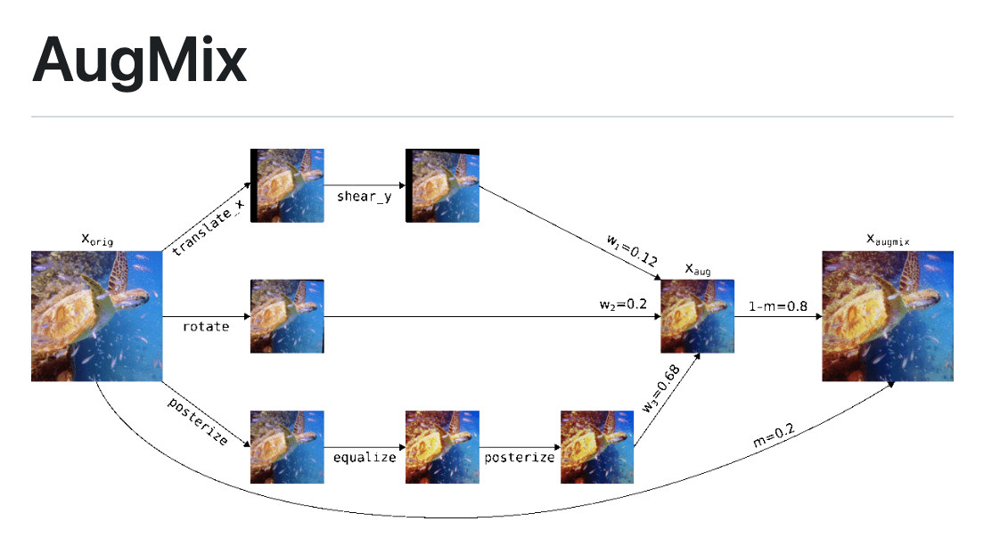
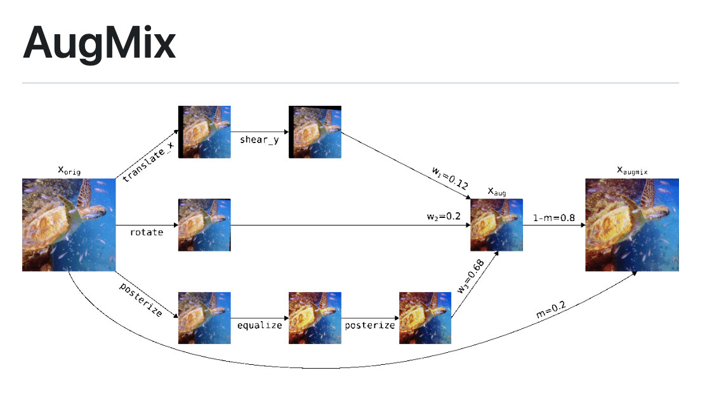

The project aims to detect whether a person is wearing a face mask or not using computer vision and machine learning techniques.
The project utilizes the VGG16 pre-trained deep learning model and a custom dataset consisting of images with and without masks.
The project is implemented using the Keras deep learning framework, OpenCV, and Python.
 

The main tasks assigned for this study are:
The addition of neural networks "Resnet18 and ConvNeXt-tiny" to the augmix code (not-pretrained and pre-trained).
Training of both neural networks on CIFAR-10 and Evaluation on CIFAR- 10, CIFAR-10-C, and CIFAR-10-P datasets with: (a) AdamW optimizer and cosine annealing learning rate scheduler. (b) SGD optimizer and lambda learning rate scheduler.
Hyperparameter tuning of convnext-tiny model to improve it’s performance

In this project I have developed the inverse kinematic model for the manipulator-arm robot.
And behaviours for picking, and placing of a ball from a certain location to another location is developed.
This project also includes the functionality where the manipulator arm returning to home position after the completion of picking and placing of a ball.

This project is a guided project offered on Coursera. In this project I have learned how to perform aerial image segmentation
on Massachusetts Road Dataset bu using U-Net architechture with efficientnet-b0 as encoder.
This project helped me gain insights in Image Segmentation for Aerial Images.
In this project I have implemented an embedding function to perform vector quantization and learned a codebook on the bottleneck of the encoder network of the NDF model to collect feature information in both continuous and discrete modes.
After that, I have trained the modified NDF model on the processed Shapenet Cars dataset on the GPU partition of the OMNI cluster for five days.
By using the trained NDF model, I have generated and evaluated the 3D model using generation metrics, and latent diffusion models.

Designed a novel double-stage receiver system and fabricated an experimental facility to meet steam parameters pressure, mass flow rate, and temperature for power generation.
Determined the receiver's collection efficiency in terms of water temperature and observed the double-stage receiver system to be 11.646% more efficient than the single-stage system at a flow rate of 1.3 liters per minute.

Identified factors causing rejection of assembled gearbox and suggested remedies which improved the efficiency of direct pass operation of 9-speed Gearbox Assembly Line by 1.5% (96.235% to 97.825%).